34关系 / 33指令逐样本审查
GT、完整地图、末帧仅供离线审计；绿色不代表人工像素金标准。坐标箭头为工程XY，未证明地理北。
中文报告221 St. Teresa of the Child Jesus Catholic Church
North of St. Teresa of the Child Jesus Catholic Church and to the left of Fill Circle Events & Exhibitions Ltd, this yellow car is in the far bottom right of the parking lot.
字面主客体未见明确倒置；语言参考系及真实地标身份仍须独立来源确认。 | within_anchor_extent
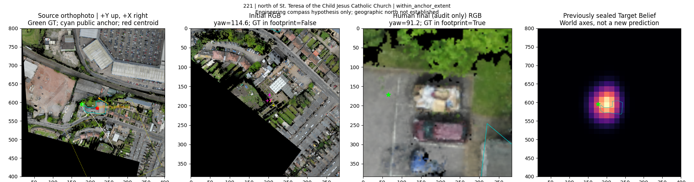
398 Celine Grove
South of Celine Grove and to the left of St Teresa's Court, it is a black car, second car left of a red car.
Celine Grove为道路；整体质心不能代表指令指涉的局部路段。 | opposite_side
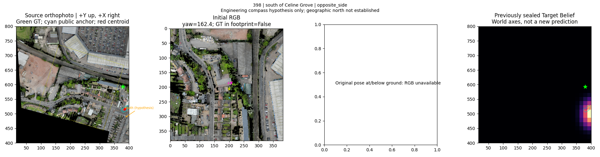
438 St Teresa's Court
this is the white car, this car is north of St Teresa's Court building and to the right of this car are the red and black cars.
字面主客体未见明确倒置；语言参考系及真实地标身份仍须独立来源确认。 | within_anchor_extent
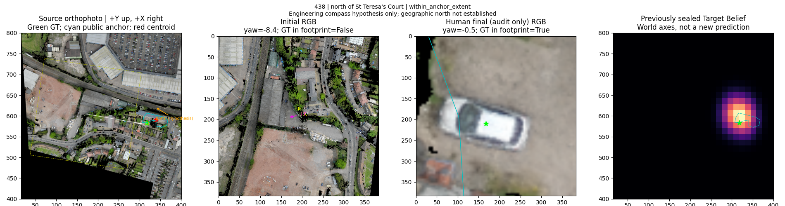
449 Celine Grove
South of Celine Grove and to the left of St Teresa's Court,it is a white car, fifth car south of a tree.
Celine Grove为道路；检查全片段、范围及局部作用点，不据GT挑选推理Anchor。 | opposite_side
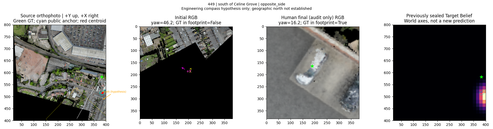
1096 The Food Warehouse
this is a white car and it is in the parking lot of the One Stop building. this car is in the 9th park row west of The Food Warehouse and is the 7th car from the north. The parking spaces to the north and south of this car are empty.
west of修饰第9排停车位；目标在该排内，需保留序数和关系链。 | opposite_side
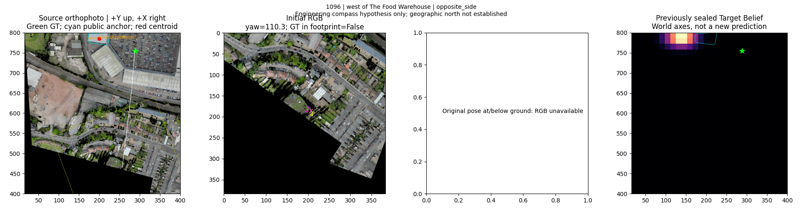
1161 The Food Warehouse
this is a black car and it is in the parking lot of the One Stop building. this car is in the 14th parking row west of The Food Warehouse and is the 1st car from the south. To the north of this car is another black car, to the south there is no car.
west of修饰第14排停车位；不能忽略排与实例约束。 | opposite_side
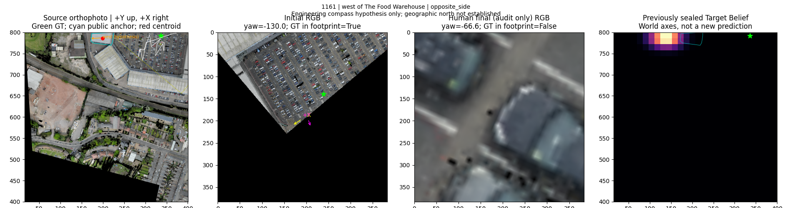
2443 Full Circle Events & Exhibitions Ltd
this is a blue car and it is in the northwest corner of the construction site north of the Full Circle Events & Exhibitions Ltd building.
目标在工地内；north of修饰工地，须保留目标→工地→地标链。 | opposite_side
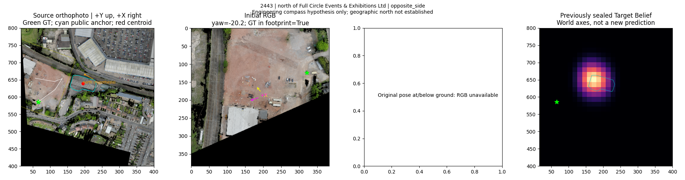
2985 Bragg Road
this is one of the buildings south of Bragg Road. There is a blue and round object in the backyard of the building to the left of this building.
字面主客体未见明确倒置；语言参考系及真实地标身份仍须独立来源确认。 | within_anchor_extent
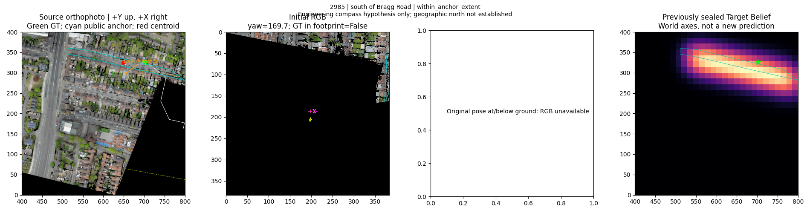
3163 Birchfield Road
It is the leftmost building of the 3 buildings on the left side north of Birchfield road. There is a green and round object in the front garden of this building.
字面主客体未见明确倒置；语言参考系及真实地标身份仍须独立来源确认。 | within_anchor_extent
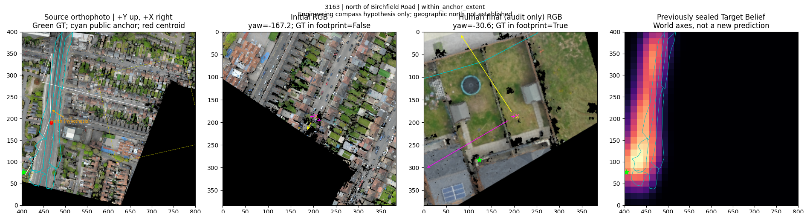
5410 Stoneleigh Road
this gray roofed building is north of Stoneleigh Road and on the corner of Bragg Road. There are two white and one blue cars in front of the building, and a red car on the left.
字面主客体未见明确倒置；语言参考系及真实地标身份仍须独立来源确认。 | within_anchor_extent
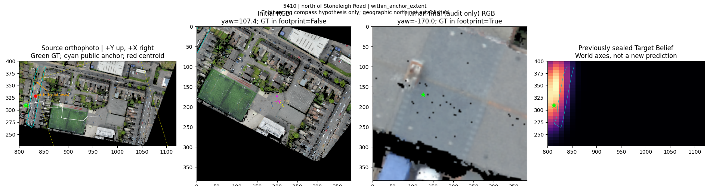
5474 Aston Lane
this is the white car and it is south of Aston Lane on the corner of Aston Lane/Wellhead Lane. south of this car another black car is partially visible.
字面主客体未见明确倒置；语言参考系及真实地标身份仍须独立来源确认。 | within_anchor_extent
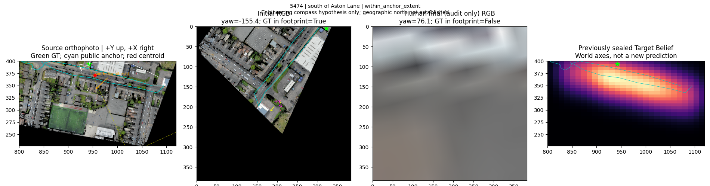
5522 Aston Lane
White car to the right of the white rectangular building with green stripes on the roof, south of Aston Lane. There are two blue containers to the south of this car.
字面主客体未见明确倒置；语言参考系及真实地标身份仍须独立来源确认。 | within_anchor_extent
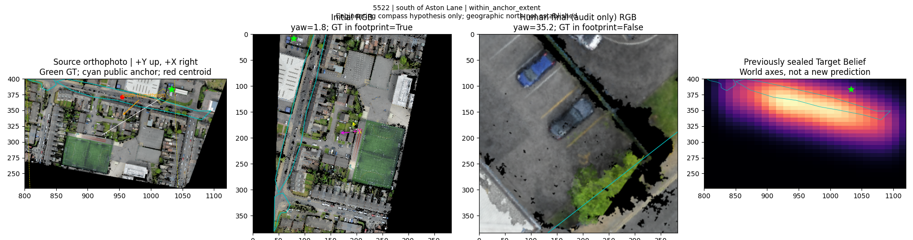
5533 Aston Lane
This black car is the closest car to the road in the large building's parking lot, between two white-roofed buildings, one large and one small, south of Aston Lane.
字面主客体未见明确倒置；语言参考系及真实地标身份仍须独立来源确认。 | within_anchor_extent
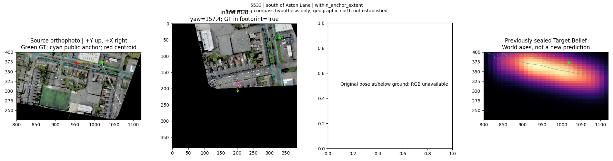
5672 Aston Manor Close
North of Aston Manor Close, this white roofed building is to the left of a green sport field.
字面主客体未见明确倒置；语言参考系及真实地标身份仍须独立来源确认。 | opposite_side
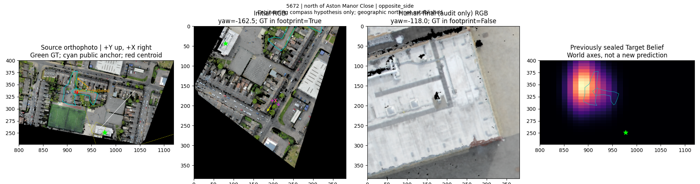
5717 Aldridge Road
This is the T-shaped red-roofed building and is north of Aldridge Road. To the right of this building is a similar building and to the left is a tree, parking area and triangular green area.
字面主客体未见明确倒置；语言参考系及真实地标身份仍须独立来源确认。 | within_anchor_extent
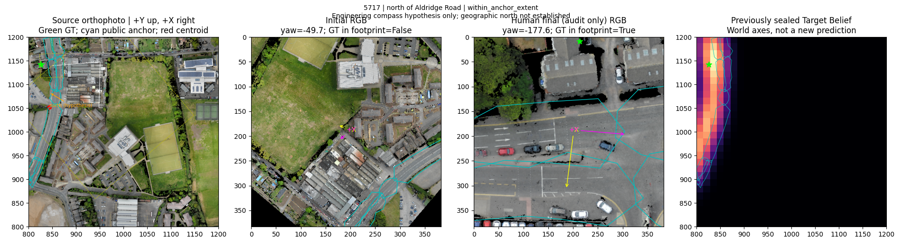
5747 Aldridge Road
this is the building with the gray roof. this building is the building on the right at the far north of Aldridge road. In front of this building, there is a blue car on the road.
字面主客体未见明确倒置；语言参考系及真实地标身份仍须独立来源确认。 | within_anchor_extent
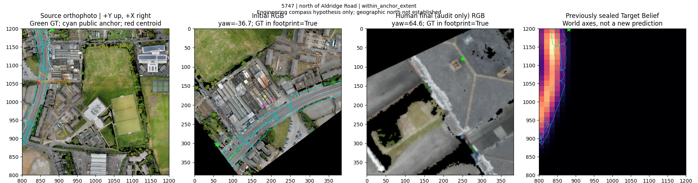
5836 Aldridge Road
The white car parked and facing the north side of Aldridge Road when viewing the road as a horizontal road. The white car is located between two similarly shaped buildings that have upside down 'T's.
facing the north side描述朝向/道路侧，且原文明确when viewing the road as a horizontal road；不宜作无歧义世界位置标签。 | within_anchor_extent
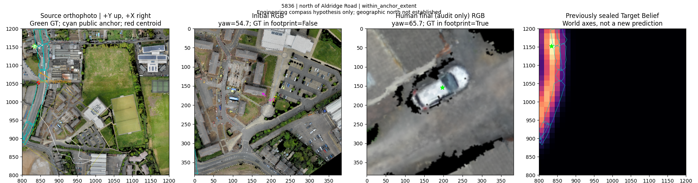
5912 Wellhead Lane
this white car is at the far north of Wellhead Lane. There is a large sand dune on the right side of this road.
字面主客体未见明确倒置；语言参考系及真实地标身份仍须独立来源确认。 | within_anchor_extent
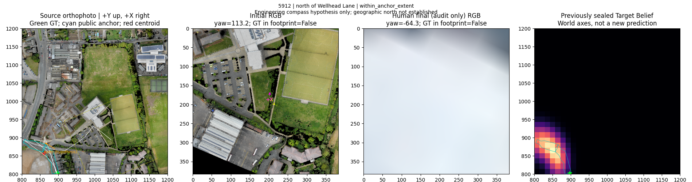
6047 Perry Barr Bus Depot
this is the white car and it is the second car from the right in the parking lot north of the Perry Barr Bus Depot building. This car has white cars to the north, gray to the right, and gray and black cars to the left.
north of修饰停车场；目标包含于停车场。 | within_anchor_extent
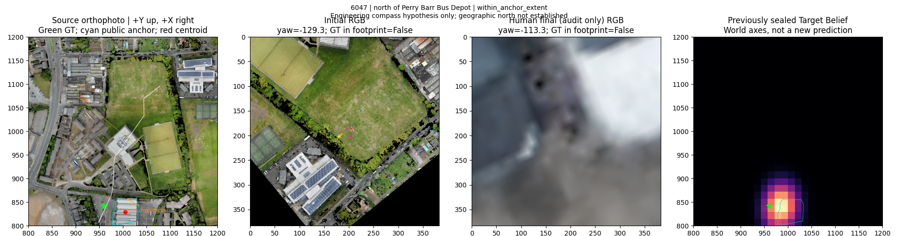
6099 Perry Barr Bus Depot
this is the white car and it is the 4th car from the right in the parking lot north of the Perry Barr Bus Depot building. This car has a blue car to its left, a white car to its right and an adjacent white car, the parking spot to the north is vacant.
north of修饰停车场；目标包含于停车场。 | within_anchor_extent
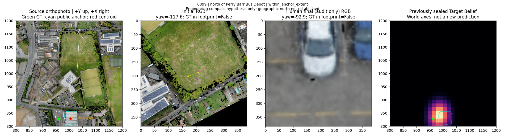
6103 Perry Barr Bus Depot
To the north of Perry Barr Bus Depot, this white car is fourth car from the right on the northmost row of the parking lot.
字面主客体未见明确倒置；语言参考系及真实地标身份仍须独立来源确认。 | within_anchor_extent
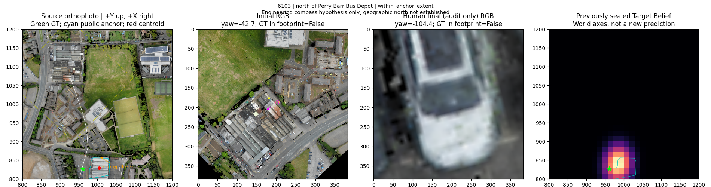
6108 Perry Barr Bus Depot
To the north of Perry Barr Bus Depot, this dark blue car is the car closest to three orange cubes in the parking lot.
字面主客体未见明确倒置；语言参考系及真实地标身份仍须独立来源确认。 | within_anchor_extent
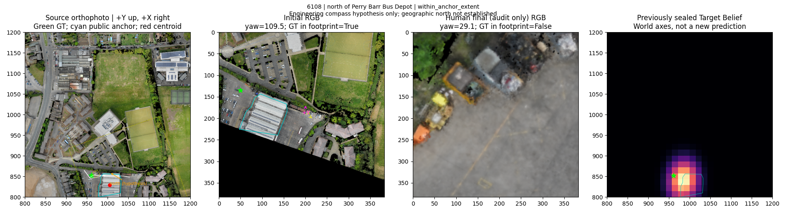
6186 West Midlands Police Custody Suite
this is the white car and it is on Holford Drive. To the north of this car is the West Midlands Police Custody Suite and to the south is a building with an invisible roof and partially visible walls.
原文是地标在车辆北侧；抽取成车辆在地标南侧，逆关系正确。 | opposite_side
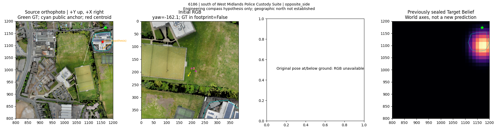
6215 West Midlands Police Custody Suite
In the row of nine cars parked to the south of West Midlands Police Custody Suite, this white car is first from the right.
south of修饰车排；须保留包含链。 | opposite_side
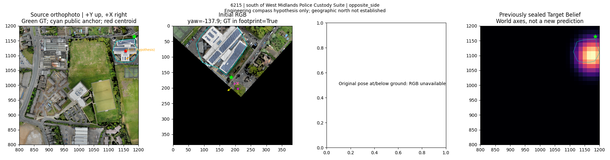
6245 West Midlands Police Custody Suite
In the row of nine cars parked to the south of West Midlands Police Custody Suite, this bluish gray car is second from the right.
south of修饰车排；须保留包含链。 | opposite_side
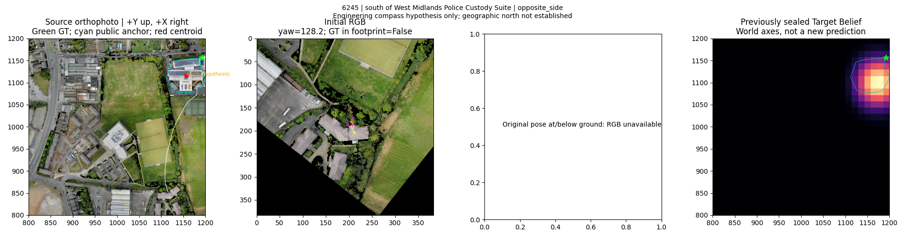
6250 West Midlands Police Custody Suite
In the row of nine cars parked to the south of West Midlands Police Custody Suite, this gray car is third from the left.
south of修饰车排；须保留包含链。 | within_anchor_extent
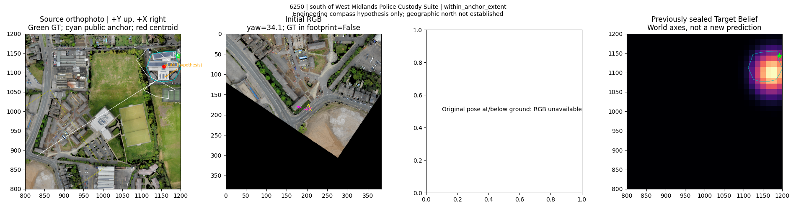
6517 The Coppice
To the south of The Coppice, this white car is parked north of the Perry Barr footpath, between a tree and a dark blue car.
同一目标包含两个关系；Perry Barr footpath绑定到Perry Barr可能存在名称范围混淆，需核对公开对象类型。 | within_anchor_extent
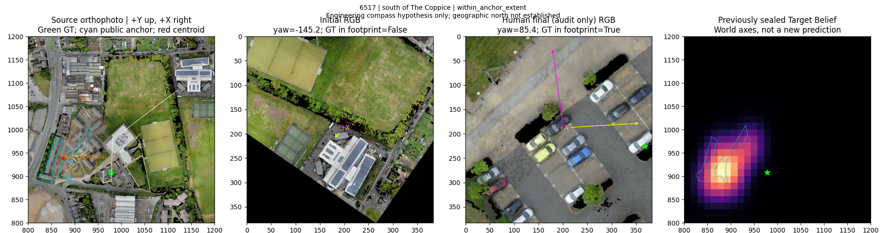
6517 Perry Barr
To the south of The Coppice, this white car is parked north of the Perry Barr footpath, between a tree and a dark blue car.
同一目标包含两个关系；Perry Barr footpath绑定到Perry Barr可能存在名称范围混淆，需核对公开对象类型。 | within_anchor_extent
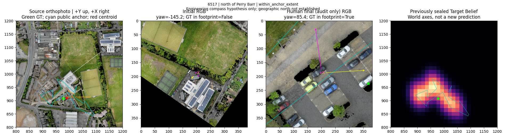
6524 Perry Barr Bus Depot
To the north of Perry Barr Bus Depot, this dark blue car is first car from the bottom on the leftmost row of the parking lot.
字面主客体未见明确倒置；语言参考系及真实地标身份仍须独立来源确认。 | within_anchor_extent
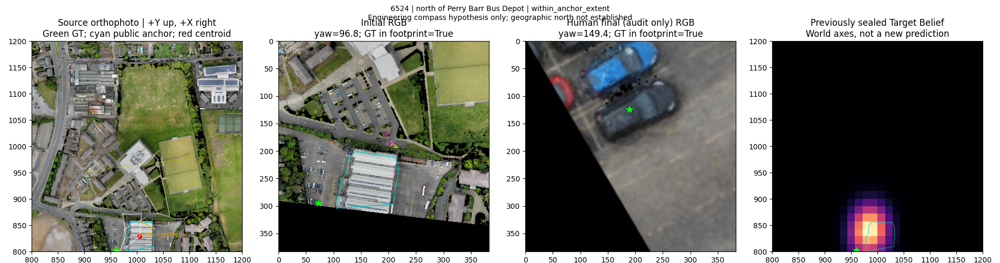
6526 Perry Barr Bus Depot
To the north of Perry Barr Bus Depot, this dark gray car is third car from the top on the third row from the left of the parking lot.
字面主客体未见明确倒置；语言参考系及真实地标身份仍须独立来源确认。 | within_anchor_extent
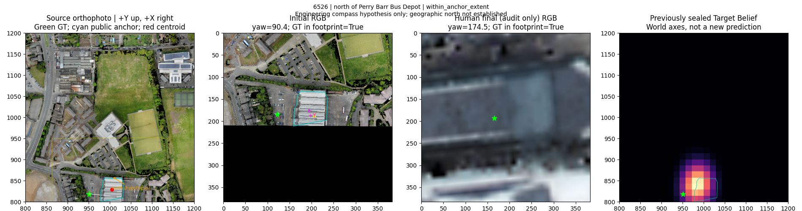
6528 Perry Barr Bus Depot
o the north of Perry Barr Bus Depot, this dark blue car is between a white car and an empty parking space,second car from the bottom on the rightmost row of cars facing right in the parking lot.
字面主客体未见明确倒置；语言参考系及真实地标身份仍须独立来源确认。 | within_anchor_extent
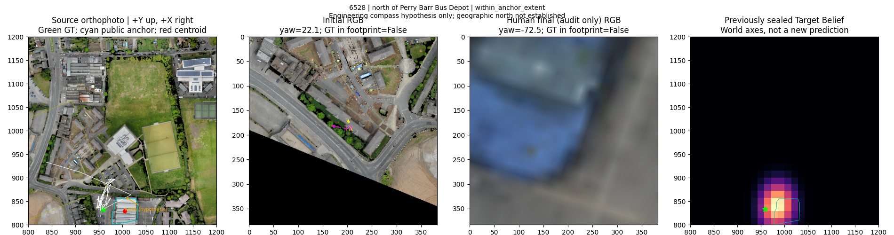
6533 Perry Barr Bus Depot
To the north of Perry Barr Bus Depot, this blue car is second car from the top on the middle row of the parking lot.
字面主客体未见明确倒置；语言参考系及真实地标身份仍须独立来源确认。 | within_anchor_extent
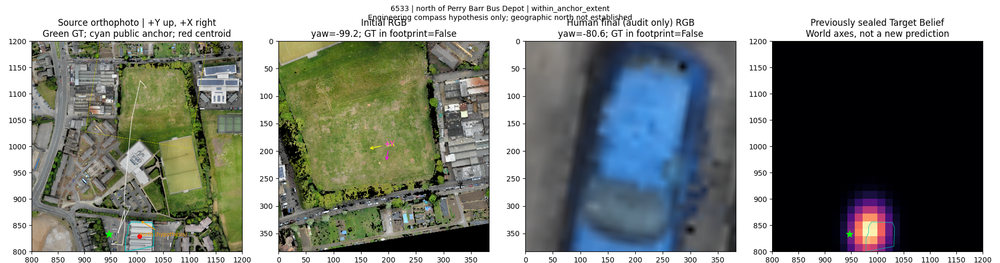
6574 West Midlands Police Custody Suite
To the south of West Midlands Police Custody Suite, this blue car is near the building, facing a white car.
字面主客体未见明确倒置；语言参考系及真实地标身份仍须独立来源确认。 | within_anchor_extent
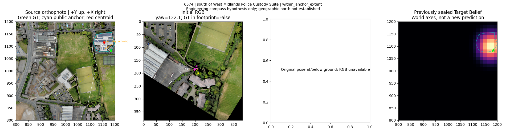
6678 Weighbridge Offices
South of Weighbridge Offices, this gray roofed building has several cars, two green, parked next to it.
字面主客体未见明确倒置；语言参考系及真实地标身份仍须独立来源确认。 | within_anchor_extent
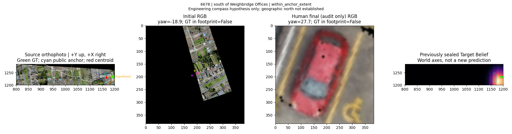